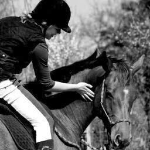

Hey ! I am Louise 😊

Hello, my name is Louise Bremond and I am 21 years old. I am currently in my 4th year at IESEG, a french business school. As part of my studies, I have the opportunity to do internships and participate in charitable associations. In addition, in parallel to my studies, I have the ambition to pass the french pastry diploma.
Education
As a student in Master 1 Digital Marketing at IESEG, I am working on fundamental and technical subjects such as digital technologies, consumer behaviour, corporate social responsibility (CSR) and the implementation of a marketing strategy, but I am also developing my relational and intercultural skills thanks to a campus that welcomes more than 2,000 students from more than 70 countries from all over the world every year.
Discover IESEG
Experiences
-
Character attendant: Since its creation in 1923, The Walt Disney Company has been growing all over the world.
I was in charge of:
- Interacting proactively with the guests by involving them in the story of the characters.
- Maintaining broadcast quality and character integrity
- Ensuring public control, including managing difficult guest situations
-
Sales advisor: According to the latest July 2019 study by Forbes, Dior is the third most influential brand in the world of luxury.
I was responsible for the following missions:
- Welcoming customers, advising and identifying their needs
- Carry out and monitor sales, using CRM tools
- Attract and retain customers by embodying Dior's values
-
Marketing and sales assistant: Sphere Travel Club is a Belgian company created in 2017. The company offers two services, namely, luxury holiday home rentals and high-end second home exchanges.
I was responsible for the following tasks:
- Creation of a digital strategy and community management
- Optimisation of the website and implementation of an SEO strategy
- Creation of content on social networks, newsletters and travelogues
Hobbies
In parallel to my studies I started a course in french pastry. I am developing my skills through a digital training but also through practical training.
I am also passionate about sewing and horse riding since my childhood.
- 
Charity work
I participate in many charitable projects. I was president of an association in Lille, l'Equipage, which works with the elderly to create intergenerational moments of conviviality. I also worked for the "secours populaire" and the ESA in order to help them in their missions, respectively, to support people in financial or social difficulties and to help children in school difficulties by school and behavioral support sessions.